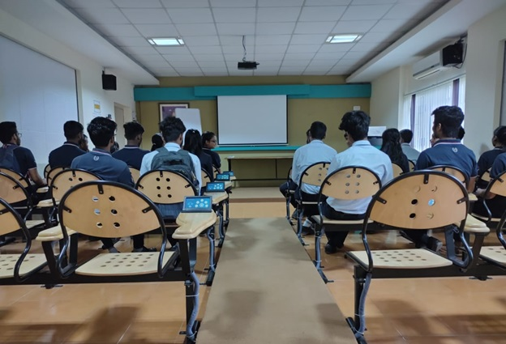

English
The department boasts of the state of the art Language and Multimedia Interactive Laboratory set up by STEP – IIT Kharagpur
• Prepares students to face the real life situation of cooperation, competition and communication through role plays, pair work, individual tasks and alumni interaction
• The laboratory caters to approximately 600-700 students in a calendar year in honing four basic language skills (LSRW) through practice
• Prepares students to face the real life situation of cooperation, competition and communication through role plays, pair work, individual tasks and alumni interaction
• The laboratory caters to approximately 600-700 students in a calendar year in honing four basic language skills (LSRW) through practice
| Sl No. | Name | Contact Number |
|---|---|---|
| 1 | Mr. Rajeeb Chetri | +91 859 777 3556 |
| 2 | Mr. Hrishikesh Roy | +91 850 829 7821 |
| 3 | Ms. Rimni Chakravarty | +91 767 936 3235 |
English Labortary

While the engineers work, they need to communicate for self-expression. For power-packed expression, English language helps a lot with its vocabulary and simplicity in use. The engineers are able to drive the gist of their communication with a modicum of vocabulary that could help in making an effective speech.